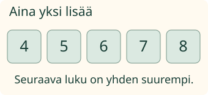
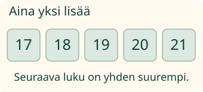

Loikan polku jatkuu. Mikä numero tulee seuraavaksi?
Loikan polku jatkuu. Mikä numero tulee seuraavaksi?
Aina yksi lisää
Jatkan lukujonoa yksi kerrallaan. Neljän jälkeen tulee viisi, sitten kuusi. Seuraava on seitsemän.

Jonoa voi jatkaa annetusta luvusta. Ei tarvitse aloittaa aina ykkösestä.
Myös kymmenen yli
8, 9, 10, 11, 12. Kymmenen jälkeen tulee yksitoista. Edelleen yksi lisää.

19:n jälkeen tulee 20. Sen jälkeen tulee 21. 20 ei jää välistä.
Ennusta: mitä puuttuu jonosta 18, 19, 21?
Katso ajatus
20 puuttuu. Yksi kerrallaan jatkettu jono on 18, 19, 20, 21.
Ilman moduulia: jatka annetulla säännöllä. Alku on 4, 5, 6. Kirjoita kaksi seuraavaa lukua: 7 ja 8. Kokeile sitten alkua 17, 18, 19.
Uusi numeropolku
Vuorolapuissa on 27, 28, 29. Seuraavat ovat 30 ja 31. Sääntö pysyy: aina yksi lisää.
Apua
Katso viimeistä annettua lukua. Mikä tulee heti sen jälkeen? Kirjoita se ensimmäiseen ruutuun. Jatka siitä vielä kerran. Voit katsoa mallia tai käyttää numerokortteja. Ääneen sanominen ei ole pakollista.
Tutki lisää
Myös nollasta voi aloittaa: 0, 1, 2, 3, 4. Kokeile lisäksi viiden kortin järjestämistä. Jokaisen kortin tulee olla mukana kerran.
Opettajalle: taito ja tuki
Vuosiluokat 1–2, procedure/atomic, direct_curriculum. Vaadittu esitieto on M-NUM-03. Tavoite on jatkaa annettua jonoa yhden askelin. Lukujen nimet rajoilla 9/10, 19/20 ja 29/30 annetaan ja niitä saa tukea. Paikka-arvon hajotelmaa, yhteenlaskumerkkiä tai taaksepäin laskemista ei aseteta uudeksi esitiedoksi. Aikuinen voi lukea tekstit.
Kaksi lukuruutua rakentavat jatkon. Valinnainen korttijono on erillinen rakentelutehtävä. Mallin luvut tulevat näkyviin vasta merkin saavuttua kortille, ja matkan aikana kerrotaan siirtymisestä. Tahti on noin 0,9 sekuntia korttia kohden; se ei ole fyysinen matka- tai nopeusmalli. Merkki on neutraali osoitin, ei uusi Loikka-pose. Malli tai apu ei poista erillisen vastauksen pätevää palautetta.
Harjoitusten luvut ovat 0–31; kenttäraja on 0–40. Harva, puuttuva, ylimääräinen tai toistuva vastausrakenne ei kelpaa täydeksi jatkoksi. Korttien tunnukset ovat erillisiä ja jokainen on mukana kerran. Tuettu jatko ei osoita suullista lukujonosujuvuutta, koko 0–100-alueen hallintaa, fyysistä hyppäämistä, muistamista tai henkilökohtaista formaalia hallintaa. Ei tallennusta tai vaikuttavuusväitettä.
Ilman ruutua kirjoita viisi peräkkäistä lukua omille korteille ja sekoita ne. Aikuinen voi antaa alun. Tavoite pysyy järjestyksen ja yhden askelen tutkimisessa.
Lopuksi: jatka: 18, 19, …, …